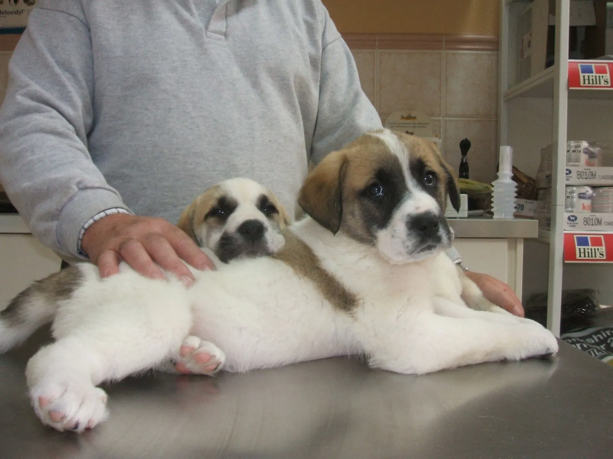
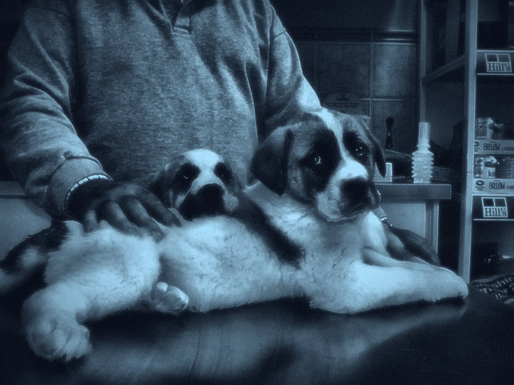
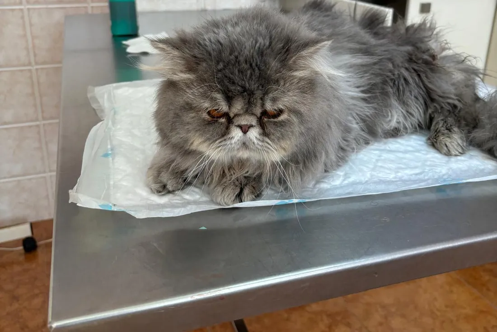
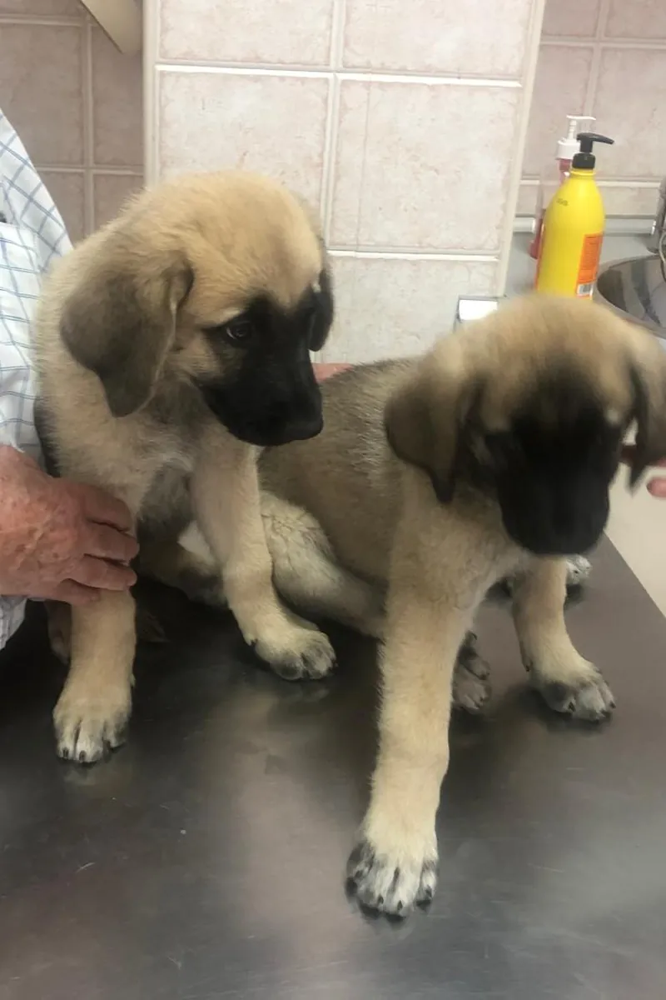
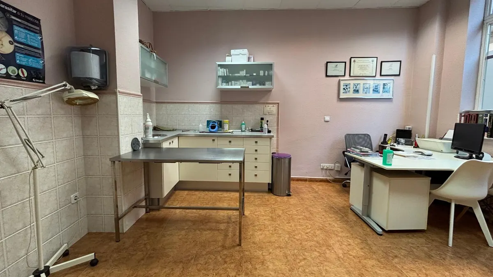
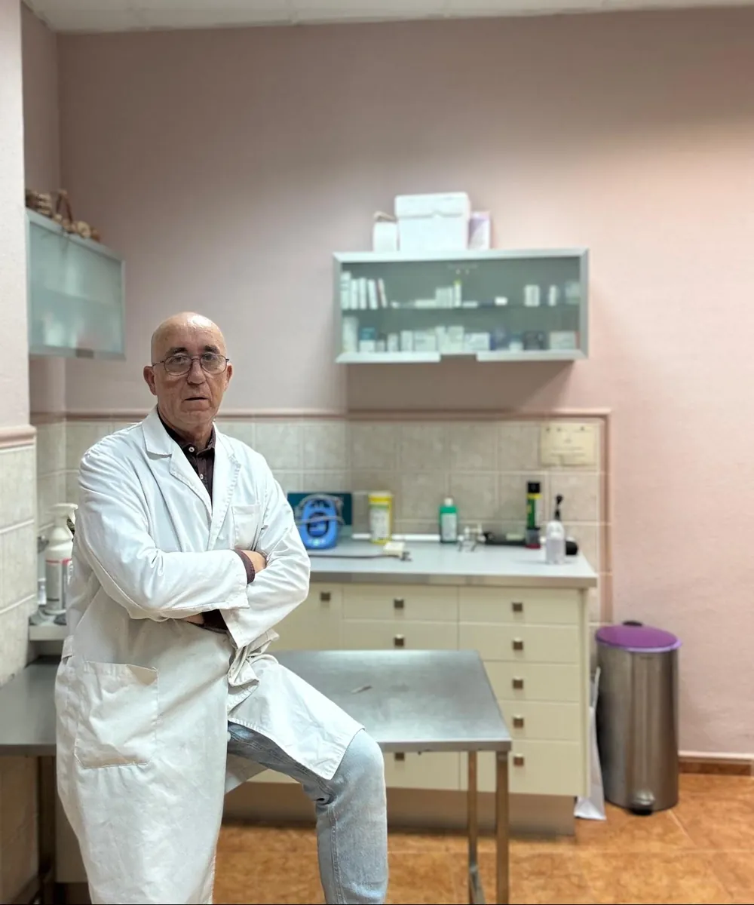

Clínica veterinaria en Pinto, desde 1994
Tu veterinario de siempre, en Pinto
Ángel De Galdo atiende a perros, gatos y otros animales en la calle Ramón y Cajal, 3. De lunes a viernes puedes venir sin cita.
- 4,7 en Google · 43 reseñas
- Lunes a viernes, 10:30 a 14:00 y 17:30 a 20:30
- dos pacientes muy tranquilos
- rayos X en la clínica
- sobre la mesa de la consulta
Diagnóstico por imagen
Rayos X y ecografía en la propia clínica
Si hace falta ver lo que no se ve desde fuera, Ángel hace la radiografía o la ecografía en la consulta. También cirugía, y análisis con resultado en menos de 24 h.
Ver todos los servicios- Nombre
- sin escribir
- Especie
- sin marcar
- Veterinario
- Ángel De Galdo
Sobre la mesa, pacientes de verdad
Fotos de la consulta, hechas por Ángel. Muévelas por la mesa o tócalas para verlas en grande.


Arrástralas por la mesa
o tócalas para verlas en grande

Sin prisas, con tiempo para cada animal
Entre semana no hace falta cita: ven en horario de consulta y te atendemos.

Quién te atiende
Que tu animal esté en buenas manos, y que tú lo sepas.
Ángel De Galdo
- Título
- Licenciado en Veterinaria por la Universidad Complutense de Madrid (1990)
- Colegiado
- Nº 3250 del Colegio Oficial de Veterinarios de Madrid
- En Pinto
- Desde 1994. Antes, en la calle Boteros; hoy, en Ramón y Cajal, 3
Ángel trabaja solo: quien te atiende en la consulta es el mismo que coge el teléfono.
Lo que dicen quienes vienen
4,7★ de valoración43 reseñas en Google
Excelente veterinario. Ángel tiene mucha empatía con sus pacientes y dueños.
Clara P. Muy buen veterinario, cariñoso y paciente con los animales.
Leire H. Excelente veterinario. Trato muy amable y muy eficaz.
Ana I. Más humano y experto, toda la vida en Pinto.
Menchu M. 9 años siendo mi veterinario.
Emy H.
Reseñas publicadas en Google, copiadas tal cual. Ver todas en Google
¿Qué necesitas hoy?
Servicios
Consulta, rayos X y ecografía, cirugía, análisis en menos de 24 h, vacunas, microchip y visitas a domicilio.
Ver la cartilla de serviciosUrgencias y citas
Entre semana, sin cita. Sábados, con cita. Para una urgencia fuera de horario, el móvil.
Qué hacer en una urgenciaHorario y cómo llegar
C/ Ramón y Cajal, 3, en Pinto. De lunes a viernes, de 10:30 a 14:00 y de 17:30 a 20:30.
Ver el horario
¿Le pasa algo a tu animal?
Llama y cuéntanos qué le pasa. Entre semana, sin cita; los sábados, con cita. Para urgencias fuera de horario, llama al móvil.
- Móvil y urgencias
- 630 83 57 28
- Fijo de la clínica
- 91 691 27 48